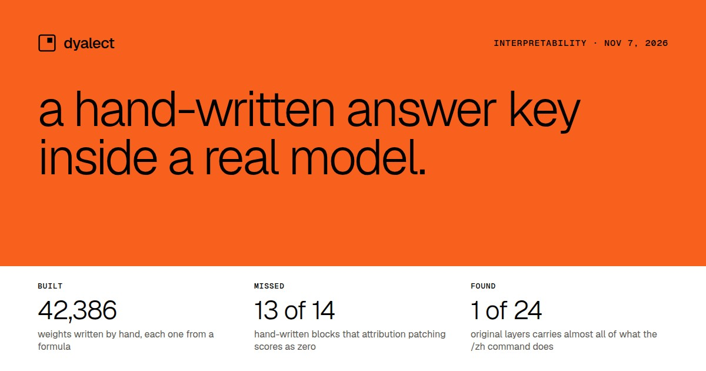

What we learn while building specialized models: how to train them, measure them, serve them, and what happens inside them. Every post comes with the numbers behind its claims.

We wrote a calculator into Qwen2.5-0.5B by hand, so we know what every one of its weights is for. Then we pointed activation patching, attribution patching, integrated gradients and the logit lens at it to see what they would find.